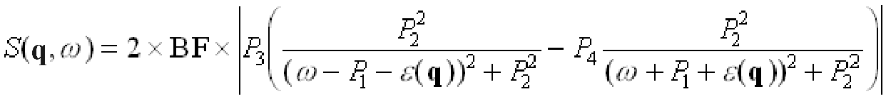
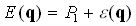
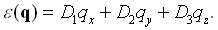
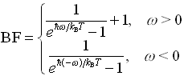

There are 8 VITESS modules to simulate scattering of neutrons in samples:
sample_elasticisotr can be used to simulate isotropic scattering
sample_sans is meant for samples in SANS mearurements, but also allows isotropic scattering.
sample_s_q assuming any function S(Q) is more general.
sample_reflectom is used for reflectometer samples.
sample_powder or sample_nxs can be used for powder samples.
sample_singcryst simulates scattering of a single crystal.
sample_inelast is used for inelastic virtual experiments
In all cases, parameters of both the sample (position, size, ...) and the scattering have to be given, partly in files. Usually, input is expected in form of tables showing scattering cross-sections or reflectivities as a function of momentum transfer or d-spacing. However, the modules sample_sans, sample_s_q and sample_nxs can do the calculation themselves.
In VITESS 3.n, the parameter input is separated between direct input parameters that are given on the main window ('Parameters for module sample_environment') and others that are stored in a file ('File input parameters'). In VITESS 4.n, all parameters can be given as direct input parameters, but using the file is still possible. If a parameter is given in both ways, the direct input parameter will be used.
While neutron transport is treated classically in VITESS, the scattering process is treated using quantum mechanics.
This module simulates a cylindrical, spherical or cuboid sample which scatters isotropically and conforming to a delta-function scattering function at energy 0.
The probability weight P provided by the former module is multiplied by the factors:
P' = (σ ρ) x (pathlength x attenuation) x (solid_angle/4 π) x P,
where (σρ) is the scattering coefficient [cm-1] i.e. the scattering cross section σ multiplied with density ρ. Attenuation means two wavelength and path length dependent exponential factors before and after the scattering: exp(-(σ + σabsorption) ρ x pathlength), where σabsorption ~ λ, and the usual tabular value for 1.798 Å has to be converted to 1 Å and used in order to calculate the input value absorption coefficient. The (σρ) scattering coefficient [cm-1] contributes to the attenuation ('self-shielding').
The sample structure is considered as homogeneous and absorbent. The geometrical parameters of the sample are: position, horizontal and vertical offset angles with reference to the final coordinate system of the antecedent module, and size of the sample.
Detailed parameter definitions can be read from the tables in section A.
In the output frame X'Y'Z', all neutron coordinates are referring to the moment when the neutrons are just crossing the sample walls after the scattering . Multiple scattering is not yet included. The effect of sample size and geometry on the scattered intensity can be calculated by calibration taking into account that I / I' = V/V' (V - illuminated sample volume).
| Parameter Unit |
Descripton | Range, Examples | Command Option |
| Parameter File | Includes FILE INPUT PARAMETERS. This file can be read or created/modified by the VITESS shell. | sampleelastizotr_default.iso | -P |
| colour [-] |
if -1, all neutrons are scattered if not, only neutrons of this color are scattered |
≥ -1 | -c |
| repetition [-] |
If this integer >1, the neutron trajectory is used multiple times to obtain better statistics. | ≥ 1 | -A |
| Parameter Unit |
Descripton | Range, Examples | Command Option |
| angle horiz/vert final [deg] |
horizontal and vertical angles θ and φ defining the main scattering direction | -180° - 180° | -E, -F |
| delta angle horiz/vert [deg] |
Angular intervals Δθ and Δφ around the main scattering direction, i.e. scattering takes place in the range [θ-Δθ, θ+Δθ],[φ-Δφ,φ+Δφ] | 0° - 180° | -e, -f |
| scattering coefficient [1/cm] |
Macroscopic total scattering cross section of the sample This is: 1/ (density * scattering cross section) |
from tables | -T |
| absorption coefficient [1/cm/ Å] |
Macroscopic absorption cross section of the sample per wavelength This is the attenuation constant per unit wavelength (corresponding to 1 Angstrom) It is: 1/ (density * absorption_cross_section). |
> 0 | -m |
| position X Y Z [cm] |
Position of the sample center (in the frame provided by the former module). | e.g. 10.0, 0.0, 0.0 | -x, -y, -z |
| sample geometry | Geometry of the sample | cylinder, hollow cylinder, sphere or cuboid | -G |
| thickness, height, width [cm] |
Thickness, height and width give dimensions of a cuboid sample. For cylinder, only diameter and height are relevant parameters. For hollow cylinder, the inner diameter is given by the third parameter. For spherical samples, the first value is considered as the radius. | e.g. cylinder: 0.5, 2.0 | -t, h, -w |
| offset angle horizontal, vertical [deg] |
A rotation first around the Z axis and then around the (new)Y axis gives the orientation of the sample. It has no relevance for a spherical sample geometry. | e.g. 0.0, 0.0 | -o,-O |
| output frame X',Y',Z' [cm] |
The position of the output frame origin in the original frame. It represents the translation vector applied to shift the origin of the original (input) frame to the new (output) position. | one point on the scattered beam axis | -X, -Y, -Z |
| output angle horizontal, vertical [deg] |
A rotation about the Z axis and then a rotation about the (new)Y axis defines a new orientation for the neutrons written to the output. | e.g. forward scattering: 0.0, 0.0 |
-u,-U |
Example for hollow cylinder V sample:
The module sample_sans describes small angle scattering at monodispers hard particles. The coordinate system of an incoming neutron is defined by the preceding module. The direction of the beamline defines the +x-axis. The y-axis is defined as the horizontal axis to the left and the z-axis as the vertical one upwards. The module SANS sample uses the angles θ and φ. θ is defined as the angle between a vector a vector R defining the flight direction of the neutron and the +x-axis and covers a range of [0..π]. φ is the angle between the projection of the vector r in the yz-plane and the +y-axis and has a range of [0..2π[.
A neutron is written to the output by this module, if the neutron arrives at the sample surface after scattering. The coordinate system has still the same orientation, but the origin has moved to the center of the sample. All sample modules consider the divergence of each neutron without any approximation to obtain the true direction of the flightpath after the scattering process.
First of all it is determined if the neutron intersects the sample. If the
neutron does not intersect the sample, it is discarded. Otherwise the neutron
is scattered along its path through the sample at a certain distance Ls
from its entrance, which is determined by a Monte Carlo choice.
The scattering is restricted to an angular range of [θ-Δθ, θ+Δθ] by the input values for θ, Δθ, φ and Δφ.
The direction of the trajectory i after the sample is given by (θi, φi).
For both, coherent scattering and incoherent scattering, both angles θi and φi are determined by a Monte Carlo
choice in these ranges. Therefore, the number of trajectories per solid angle in this range depends on the choice of the range.
To get the real flux into this solid angle, this has to be considered by the factors
(see below). The differential cross section is given by the square of the scattering amplitude (see e.g. Feigin, Svergun, Structure Analysis by Small-Angle X-Ray and Neutron Scattering (2.2), or P. Fratzl in 'PSI Proceedings 97-01, Cold Neutrons - High Resolution'):
dσ/dΩ = |A (Q)|2 = | ∫ ρ(r) exp(iQ*r) dV)|2
Integration yields for N identical particles of volume Vp and scattering length density ρp:
= N ρp2 Vp2 F(Q)
with the Form Factor F(Q) = |S(Q)|2 = | ∫ exp(iQ*r)dV / Vp|2. Considering also the scattering length density ρs of the solution:
dσ/dΩ = N(ρp-ρs)2 Vp2 F(Q) = (ρp-ρs)2 fp VpVsmplF(Q)
where fp is the volume fraction of the particles and Vsmpl the sample volume. Now it is possible to calculate the cross section for scattering into a solid angle Ω. For a discrete number of orientations (θi,φi):
(The meaning of Ni is explained below). Here, we get:
σcoh(Ω) = (ρp-ρs)2 fp Vp Vsample F(Q) (φmax-φmin)(θmax-θmin) 1/Ni ∑ sin θi
= Gcoh 4π (ρp-ρs)2 fp Vp Vsmpl F(Q) 1/Ni ∑ sin θi
The probability of scattering neutrons into this solid angle is:
Pcoh = Iout,coh / Iin = σcoh(Ω) / Asmpl
Iin denotes the incoming neutron current, Iout,coh the current of the neutrons scattered into the solid angle Ω. Asmpl is the area of the sample perpendicular to the beam direction. With the preceding equation:
Li denotes the total length of the flightpath of the trajectory
under consideration through the sample. Ni is the number of trajectories
times the number of repetitions, the sum is over these Ni orientations.
(In practice, the influence of the number of trajectories on the probability
is already taken into account in the module 'Source', but the number
Nr of repetitions must be considered here.) pcoh is
the probability that a neutron is scattered at all.
The values for F(Q) can be calculated from size and shape for particles
of a simple geometry, e.g. for spheres
Fspheres(Q) = 
Apart from spheres, the form factors of ellipsoids, cylinders and parallelepipeds are introduced in the program. The formula are taken from the literature mentioned above. Additionally, isotropicscttering can be chosen for testing normalization purposes. Apart from the spheres, the orientation of the particle relatively to the neutron flight direction is determined by a Monte Carlo choice before the treatment of the scattering event.
In addition to the coherent scattering, the incoherent scattering can be treated. This gives an isotropic distribution of the incoherently scattered neutrons. This scattering probability is given by
pinc = Iout,inc / Iin = N σinc/ Asmpl = Vsmpl/v0 * σinc/Asmpl = Li σinc/v0 = Li μinc
σinc is the incoherent scattering cross section of the unit cell; μinc = σinc/v is the macroscopic incoherent scattering cross section, which can be given as an input in the sample file.
For all trajectories, an attenuation At is considered as follows:
At = exp{-Ln (μtot + μabs λ/1.798 Å)}
Ln is the total neutron flight path in the sample (surface -> point of scattering -> surface). μtot = σtot/v0 denotes the total macroscopic scattering cross section to be interpreted as wavelength independent, μabs = σabs/v0is the macroscopic absorption cross section (to be provided for λ= 1.798 Å).
For each incoming trajectory, Nr - only coherent scattering - or 2*Nr - with incoherent scattering - trajectories are generated. Summing over these trajectories, the probability for the scattering of a trajectory is then composed by:
P = ∑ (Gcoh pcohsin θi + Ginc pinc sin θi) At / Nr
where sin θi considers the θ-dependence of the isotropic distribution of the scattering orientations.
| Parameter Unit |
Description | Range, Examples | Command Option |
| sample file | The sample file describes the geometry and properties of the sample. | -S | |
| max. theta [deg] |
In SANS, neutrons are always scattered in a cone around the positive x-axis This parameter defines the edge of the cone, i.e. the maximal deviation from the forward direction. |
0ฐ - 180ฐ | -M |
| repetitions | 'repetitions' specifies the number of data sets (trajectories) generated for each scattered trajectory. A larger number of repetitions enriches the population on the detector and gives therefore better statistics in the spectrum, but the number of density of events in the parameter space is not increases, e.g. the number of different wavelength values remains the same. Therefore, an increase of the number of trajectories created by the source module is favorable. | ≥ 1 | -A |
| incoherent scattering |
yes: neutrons are additionally scattered incoherently no: incoherent scattering is omitted |
yes, no | -I |
Example:
(The order written to the sample file differs from the sequence in the GUI.
Anything after the # character is interpreted as a comment.)
2.0 0.0 0.0 # sample position relative to the coordinate system defined by the preceding module is: 2 cm along the x-axis cub # sample has the geometry of a cuboid 0.1 1.0 1.0 # thickness, height and width of the cuboid are 0.1 x 1 x 1 cm 1.0 0.0 0.0 # orientation of the cuboid: thickness is in x-direction, height in z-direction (vector need not be normalised) S 500.0 # sperical particles of radius 500 Å 1.0E10 3.0E10 0.03 # scattering length densities: particles 1010 1/cm², solution 3x1010 1/cm², 3 % vol. frac. of particles 0.0 0.5 0.05 # Scattering cross sections: incoherent=0, total=0.5 cm-1 and absorption=0.05 cm-1Å-1
| Parameter Unit |
Description | Range, Examples | Command Option |
| x,y,z [cm] |
position of the sample centre relative to the coordinate system defined by the preceding module | -x,-y,-z | |
| sample geometry | Shape of the sample | cylinder, sphere or cuboid | -G |
| thickness or radius [cm] |
thickness of cuboid, or radius of sphere, or radius of cylinder (from file) | > 0 | |
| thickness or diameter [cm] |
thickness of cuboid, or diameter of sphere, or diameter of cylinder (from input parameter) | > 0 | -t |
| height [cm] |
height of cuboid, or height of cylinder | ≥ 0 | -h |
| width [cm] |
width of cuboid | ≥ 0 | -w |
| x,y,z direction |
vector components describing the orientation of the sample (it is not necessary to give a normalized vector). cylinder: the vector is always perpendicular to the top of the cylinder (standard cyl. position (001), height along the z-axis). cuboid: Standard is the (1,0,0) direction, i.e. the sample has a thickness in x-direction, a width in y-direction and height in z-direction. By giving a different vector the whole sample is rotated in this direction, i.e. the planes separated by 'thickness' remain perpendicular to this vector. sphere: no values needed. |
e.g. (0,0,1) for vertical cylinder | -X,-Y,-Z |
| scattering objects |
geometry of the particles in solution: additionally, isotropically scattering objects can be chosen for testing normalization purposes |
spheres, polydispersive spheres, ellipsoids, parallelepipeds, cylinders | -O |
|
radius 1 or length radius 2 or width radius 3 or height [Å] |
sizes of the particles in solution spheres: the radius of the spheres must be given in radius 1, the other parameters are not needed polydispersive spheres: the minimal radius of the spheres must be given in radius 1, the maximal radius in radius 2 ellipsoids: the three radii of the ellipsoid must be given parallelepipeds: length, width and height of the parallelepiped must be given cylinders: the first two parameters are radius 1 and radius 2 of the cylinder, the third is the length isotropic: no parameter needed |
≥ 0 | -U,-V,-W |
| scat. len. dens. particl. [1/cm²] |
Scattering length density of the particles | ≥ 0 | -l |
| scat. len. dens. solution [1/cm²] |
Scattering length density of the solution | ≥ 0 | -L |
| vol. fraction of particles | Volume fraction of the particles in solution (for 5 %: 0.05) | 0 < frac < 1 | -f |
| incoherent scattering total scattering absorption [cm-1, cm-1, cm-1Å-1] |
Macroscopic cross sections for incoherent scattering, total scattering and absorption for 1.798 Å absorption is supposed to increase linearly with wavelength, the other are regarded as wavelength independent. |
≥ 0 | -i, -T, -m |
The module S(Q)-sample describes the coherent and incoherent elastic scattering of a S(Q)-sample. The coordinate system of an incoming neutron is defined by the preceding module as well as the main flight path of the neutrons. The main flight direction of the neutrons defines the +x-axis. The y-axis is defined as the horizontal axis and the z-axis as the vertical one. The module S(Q)-sample uses the angles θ and φ. θ is defined as the angle between a vector r and the +x-axis and covers the range from [0..π]. φ is the angle between the projection of the vector r in the yz-plane and the +y-axis and has the range of [0..2π[.
A neutron is written to the output by this module, if the neutron arrives at the sample surface after scattering. The coordinate system has still the same orientation, but the origin has moved to the center of the sample. All sample modules consider the divergence of each neutron without any approximation to obtain the true direction of the flightpath after the scattering process.
First of all it is determined if the neutron intersects the sample. If the neutron does not intersect the sample, it is discarded. Otherwise the neutron is scattered along its path through the sample at a certain distance Ls from its entrance, which is determined by a Monte Carlo choice.
The scattering is restricted to an angular range of [θ-Δθ θ+Δθ], [φ-Δφ, φ+Δφ] by the input values for θ, Δθ, φ, Δφ. The direction of the trajectory i after the sample is given by (θi, φi ). For both, coherent scattering and incoherent scattering, both angles θi and φi are determined by a Monte Carlo choice in these ranges. Therefore, the number of trajectories per solid angle in this range depends on the choice of the range. To get the real flux into this solid angle, this has to be considered by the factors
(see below). With the equation for the differential cross section (Squires, Thermal Neutron Scattering (5.29)):
dσ/dΩ = N σcoh/(4πS(Q))
it is possible to calculate the cross section for scattering into a solid angle Ω. (N is the number of nuclei in the scattering system.) For a discrete number of orientations (θi, φi ):
(The meaning of Ni is explained below). Here we get:
σcoh(Ω)
= N σcoh/(4π) (φmax-φmin)(θmax-θmin) 1/Ni Σ sin θi
= GcohN σcoh S(Q) 1/Ni Σ sin θi
The probability of scattering neutrons into this solid angle is:
Pcoh = Iout,coh / Iin = σcoh(Ω) /Asmpl
Iindenotes the incoming neutron current, Iout,coh the current of the neutrons scattered into the solid angle Ω. Asmpl is the area of the sample perpendicular to the beam direction. With the preceding equation:
S(Q) denotes the structure factor as a function of the momentum transfer Q, Vsmpl the sample volume, and v0 the volume per nuclei.
μcoh = σcoh/v0 denotes the macroscopic coherent scattering cross section and
Li the total length of the flightpath of the trajectory under consideration through the sample.
Ni is the number of trajectories times the number of repetitions, the sum is over these Ni orientations.
(In practice, the influence of the number of trajectories on the probability is already taken into account in the module 'Source', but the number Nrof repetitions must be considered here.)
pcoh is the probability that a neutron is scattered at all.
The values for S(Q) can be taken from the structure factor file or be calculated in the function "CalcStructureFactor" in "sample_s_q.c".
As default, a function using the Percus-Yevick hard sphere model with special parameters is called.
In addition to the coherent scattering, the incoherent scattering can be treated. This gives an isotropic distribution of the incoherently scattered neutrons. This scattering probability is given by
pinc = Iout,inc / Iin = N σinc/Asmpl = Vsmpl / v0 σinc / Asmpl = Li σinc / v0 = Liμinc
σinc is the incoherent scattering cross section of the unit cell; μinc = σinc / v is the macroscopic incoherent scattering cross section, which can be given as an input in the sample file.
For all trajectories, an attenuation At is considered as follows:
At = exp{-Ln (μtot + μabs λ/(1.798 Å))}
Ln is the total neutron flight path in the sample (surface -> point of scattering -> surface). μtot = σtot / v0 denotes the total macroscopic scattering cross section to be interpreted as wavelength independent, μabs = σabs / v0 is the macroscopic absorption cross section (to be provided for λ=1.798 Ang).
For each incoming trajectory, Nr- only coherent scattering - or 2 Nr - with incoherent scattering - trajectories are generated. Summing over these trajectories, the probability for the scattering of a trajectory is then composed by:
P = Σ (Gcoh pcoh sin θi + Ginc pinc sin θj) At / Ni
where sin θi considers the θ-dependence of the isotropic distribution of the scattering orientations.
| Parameter Unit |
Descripton | Range, Examples | Command Option |
| sample file | The sample file describes the geometry and compositions of the sample. | -S | |
|
Theta, dTheta, Phi, dPhi [deg] |
These parameters describe the solid angle covered by the detector.
The direction (θ φ) points to the middle of the covered area, which extends from [θ-Δθ θ+Δθ] and [φ-Δφ, φ+&Deltaφ]. θ is defined as the angle between +x-axis (main flight direction of the neutrons) and the Vector R to be described. φ is the angle between the +y-axis and the projection of R to the yz-plane. x,y and z form a right-handed system. !!!Note: If you specify any of the parameters Δθ, θ, Δφ or φ, you must specify all of them.!!! The default is a coverage of 4π. |
Example: 20ฐ to 160ฐ scattering to the right in +/-20ฐ vert.: θ=90ฐ, Δθ=70ฐ φ=180ฐ Δφ=20ฐ |
-D, -d, -P, -p |
| repetitions | 'repetitions' specifies the number of data sets (trajectories) generated for each scattered trajectory. A larger number of repetitions enriches the population on the detector and gives therefore better statistics in the spectrum. | ≥ 1 default: 1 |
-A |
| incoherent scattering |
yes: neutrons are additionally scattered incoherently no: incoherent scattering is omitted |
yes, no | -I |
| modulation freq. [Hz] |
modulation frequency of the sample response to an external modulation, e.g. for TISANE if freq > 0.0: S(Q,t) = S(Q) 1/2 (1 + cos(2*pi*freq*t + Phase0)) |
≥ 0 default: 0 |
-f |
| phase(t=0) [deg] |
phase of the sample response at t=0 if freq > 0.0: S(Q,t) = S(Q) 1/2 (1 + cos(2*pi*freq*t + Phase0)) | default: 0 | -o |
Example:
(The order written to the sample file differs from the sequence in the GUI.
Anything after the # character is interpreted as a comment.)
100.0 0.0 0.0 # sample position relative to the coordinate system defined by the preceding module cyl # sample geometry (cyl, bal or cub) 2.0 10.0 # radius and height of the cylinder in cm 1.0 0.0 0.0 # orientation of the cylinder; need not be normalised D # S(Q) data from file SiO_300.str # file containing the structure factor data for the unit cell 0.0082 0.0824 0.0139 # Scattering cross sections: incoherent, total and absorption
| Parameter Unit |
Descripton | Range, Examples | Command Option |
| x,y,z [cm] |
position of the sample centre relative to the coordinate system defined by the preceding module | -x,-y,-z | |
| sample geometry | Shape of the sample | cylinder, sphere or cuboid | -G |
| thickness or radius [cm] |
thickness of cuboid, or radius of sphere, or radius of cylinder | > 0 | -t |
| height [cm] |
height of cuboid, or height of cylinder | ≥ 0 | -h |
| width [cm] |
width of cuboid | ≥ 0 | -w |
| x,y,z direction |
vector components describing the orientation of the sample (it is not necessary to give a normalized vector). cylinder: the vector is always perpendicular to the top of the cylinder (standard cyl. position (001), height along the z-axis). cuboid: Standard is the (1,0,0) direction, i.e. the sample has a thickness in x-direction, a width in y-direction and height in z-direction. By giving a different vector the whole sample is rotated in this direction, i.e. the planes separated by 'thickness' remain perpendicular to this vector. sphere: no values needed. |
e.g. (0,0,1) for vertical cylinder | -X,-Y,-Z |
| structure factor | The function S(Q) can either be read from file or determined by analytical functions | "from file" "as function" |
-F |
| structure factor file | This file (*.str) contains two columns, the first one for the momentum transfer values Q [Å-1] and the second column contains the corresponding values for S | -s | |
|
incoherent scattering, coherent scattering, absorption [cm-1, cm-1, cm-1Å-1] |
Macroscopic cross sections for incoherent scattering, coherent scattering and absorption for 1.798 Å absorption is supposed to increase linearly with wavelength, the other are regarded as wavelength independent. |
≥ 0 | -i,-C,-m |
This module simulates a sample of a reflectometer.
The reflectivity data of a sample are taken from a file that contains
the reflectivity R as a function of momentum transfer Q. To be able to get
a simulated function R(Q), it is possible to simulate a reference measurement.
The reference sample has a reflectivity of 1 for all Q-values.
If offspecular scattering
mode is desired, the reflectivity file should contain a look-up table in the form: q_i, q_f,j, R(q_i, q_f,j).
Here, q_i is the incoming neutron "scattering" vector: q_i = 2*pi/lambda * sin(theta), where theta is the angle between
the sample and the beam axis. q_f,j is an array of possible outgoing scattered vector components :
q_f,j = 2*pi/lambda * sin(theta_j), where theta_j=theta is the specular case and theta_j=-theta stands for the direct beam.
The reflectivity table thus looks like this:
q_i.................q_f,j.......R(q_i, q_f,j)
0.00255028 -0.0800882 0.001
0.00255028 -0.0797596 0.0005
0.00255028 -0.079431 0.0005
0.00255028 -0.0791025 0.0015
...
0.00255028 0.0876443 0.0005
0.00255028 0.0879728 0.0005
0.00280531 -0.0798336 0.0005
0.00280531 -0.079505 0.0005
0.00280531 -0.0791764 0.0005
0.00280531 -0.0788478 0.0005
0.00280531 -0.0785192 0.001
...
An empty line between two subsequent q_i values is recommended to match the plotting format of gnuplot. An example file with a
generic offspecular look-up table is provided in the FILES folder.
The reflectometry sample can now handle incoherent isotropic scattering. It requires information on the scattering path length mu, with P=μ*x being the scattering probability (0.00288 1/cm for D2O), and on some detector parameters. Besides, if the ratio between the area containing the specular signal and the total detector area is known, this is used to scale the incoherent trajectories such that eval_elast can provide the correct backgroun level without additional data treatment inside and outside the specular signal area.
The reflection of neutrons at several angles can be done in one simulation. In this case, a minimal value, a maximal value, and a step size for the reflection angle must be given (see chapter C). If only one angle shall be considered, the step size must be set to zero or minimal and maximal value must be identical.
| 1. Sample: | Reflectivity data from the reflectivity file |
| 2. Reference: | Reflectivity R=1 for all angles. |
| Parameter Unit |
Descripton | Range, Examples | Command Option |
| mode | Option: Virtual reflectivity measurement or reference measurement using R=1 | 'sample' or 'reference' | -O |
| Parameter File | Includes File input parameters. This file can be read or created/modified by the VITESS shell. Values are read from separate rows i.e. 1 value/row for scalar and 3 values/row for vector type variables. | refl_probe.rpb | -P |
| Reflectivity File |
File that contains the reflectivity of the sample as a function of momentum transfer 1. column: momentum transfer [1/A] 2. column: reflectivity It is only needed for the option 'Sample'. |
refl_probe.dat | -I |
| Axis of rotation | Axis around which the sample is rotated | 'Y' or 'Z' | -R |
| reflection angle θ [deg] |
θ=0 means: no reflection, sample parallel to incoming beam positive q.value means: reflection towards the positive z- or positive y-direction resp. |
-90° .....90° typical. +1°....+4° |
-a |
| Offspecular scattering |
'On': In addition to specular reflection, off-scattering is considered. The reflectivity file contains columns qi, qf,j, R(qi, qf,j) 'Off': only specular reflection is taken into account. The reflectivity file contains columns Q, R(Q). |
'Off' or 'On' | -o |
| Incoherent scattering |
'On': incoherent scattering from the sample is considered 'Off': incoherent scattering is NOT taken into account If enabled, the module expects additional parameters (see following lines) |
'Off' or 'On' | -B |
| Detector distance, width, height cm |
If 'Incoherent scattering' the from sample is chosen, detector distance, height and width should be given to efficiently scatter the neutrons towards the detector surface. The specular signal is expected in the center of the detector. |
> 0 | -d - p -t |
| Incoherent pathlength | If 'Incoherent scattering' from sample is chosen, the parameter μ for the scattering probability P = μ*x is needed, where x is the pathlength in the sample. | μ=0.00288 1/cm for D2O | -B |
| Norm factor |
Ratio between the specular area and the total detector area. If given, the background trajectories are scaled and the resulting reflectivity should show the expected background level. |
Usually several percent for an area detector, put in 1 if unknown. | -S |
| Parameter Unit |
Descripton | Range, Examples | Command Option |
| main position [cm] |
x, y, z Generally this position defines the reference point (origin) of the sample in the frame provided by the former module. |
x = distance to CE y = z = 0.0 |
-x -y -z |
|
thickness, width, height of CE
[cm] |
t, w, h Thickness, width and length give the sizes of the (rectangular) sample: for reflection angle 0, the reflecting surface of the sample is in the x-y-plane. The thickness is along the z-axis, width along the y-axis and length along the x-axis. Thickness is used to determine a distance from the surface (by MC choice) where the reflection is supposed to take place. |
t = 0.00002 cm
w = h = 2.0 cm |
-t -w -l |
| frame generation |
'user defined frame' sets the following coordinate system according to the values given below. 'standard frame generation' leaves the coordiate system as it is, i.e. origin at sample centre, x-axis along the incoming beam. |
>'standard frame generation' 'user defined frame' |
-F |
|
output angle horizontal, vertical [deg] |
Φ, Θ In case of "user defined output frame", a Φ rotation about the Z axis and then a Θrotation about the (new)Y axis defines a new reference orientation. According to this and the output frame translation vector (see below) the neutrons are written to the output file. If "standard frame generation" is activated, the output frame is not rotated relatively to the original frame. |
Φ = 180°, Θ= -2θ | -o -O |
| output frame [cm] |
x', y', z' The position of the output frame origin (O) in the original frame. (x', y', z') represents the translation vector applied to shift the origin of the original (input) frame (O) to the new (output) position. Default setting is: (x', y', z') = (x, y, z) i.e. main position of the sample. |
one point on the scattered beam axis | -X -Y -Z |
If several reflection angles are considered simultaneously, one incoming neutron can cause up to
Nmax = (θmax - θmin) / Δθ + 1
outgoing neutrons. (This number is reached, if the sample is hit by the neutron at all angles.)
So the overall neutron flux at the detector is no longer comparable to
the flux before the sample. Thus it is senseful to evaluate the data (using
the module EVAL_ELAST) to separate the neutrons reflected at the different
angles.
An evaluation in scattering angle is possible, if the angle difference Δθ is larger than the fluctuation in the orientation
of the incoming neutrons. For an evaluation in the momentum transfer Q, the
variation in Q of the incoming neutrons (caused by fluctuation in orientation
and wavelength) must be smaller than the difference in Q caused by the angle difference Δθ.
The module sample_powder describes the coherent and incoherent elastic scattering of a powder sample.
All parameter data are taken from file.
The coordinate system of an incoming neutron is defined by the preceding module. The direction of the beamline defines the +x-axis.
The y-axis is defined as the horizontal axis to the left and the z-axis as the vertical one upwards.
The powder sample module uses the angles θ and φ.
θ is defined as the angle between a vector R defining the flight direction of the neutron and the +x-axis and covers a range of [0..π].
φ is the angle between the projection of the vector R to the yz-plane and the +y-axis and has a range of [0..2 π[.
A neutron is written to the output by this module, if the neutron arrives at the sample surface after scattering. The coordinate system has still the same orientation, but the origin has moved to the center of the sample. All sample modules consider the divergence of each neutron without any approximation to obtain the true direction of the flightpath after the scattering process.
Description of the scattering:
First of all it is determined if the neutron intersects the sample. If the
neutron does not intersect the sample, it is discarded. Otherwise the neutron
is scattered along its path through the sample at a certain distance Ls
from its entrance, which is determined by a Monte Carlo choice. The probability
pcoh (see e.g. Squires (3.103)) of the scattering process results
from summing up the single contributions Pcoh, d for all d-spacings
which satisfy the Bragg equation for a neutron with wavelength λi:
σcoh,d(cone) = Vsmpl*λi3/(4v0²) * |Fd|2 / sin(0.5*θsc,i) (Squires (3.103))
=> pcoh,d = Iout,coh /Iin = σcoh,d(cone) / Asmpl = Li*λi3/(4*v0²) * |Fd|2 / sin(0.5*θsc,i)
with θ sc,i = 2*asin(λi/(2*d))
Fd denotes the structure factor; it is the sum over all reciprocal
lattice vectors with the same d-spacing d. (d and |Fd|2
are taken from the structure factor file.) θsc,i
is the scattering angle of the i-th trajectory, Vsmpl the sample
volume, and v0 the unit cell volume. Iin denotes
the incoming neutron current, Iout,coh the current of the neutrons
scattered to the cone. Asmpl is the
area of the sample perpendicular to the beam direction. Li denotes
the total length of the flightpath of the trajectory under consideration through
the sample. The values for |Fd|2 contain the Debye-Waller factor.
The direction of the trajectory i after the sample is given by (θi, φi).
The angle θi is determined by &thetasc,i ; φi
is given by a Monte Carlo choice between &phi - Δφ and &phi + Δφ.
In addition to the coherent scattering, incoherent scattering can be treated. This gives an isotropic distribution of the incoherently scattered neutrons. The scattering probability is given by
pinc = Iout,inc / Iin = Nσinc/Asmpl = Vsmpl/v0 σinc/Asmpl = Li/v0*σinc = Li*μinc
σinc is the incoherent scattering cross section of the unit cell; μinc = σinc/v is the macroscopic incoherent scattering cross section, which can be given as an input in the sample file.
The scattering is restricted to an angular range of [θ-Δθ, θ+Δθ],[φ-Δφ, φ+Δφ] by the input values θ, Δθ, φ and Δφ. For coherent scattering, θi is determined by the Bragg condition . If it is out of the range [θ-Δθ, θ+Δθ], the trajectory is discarded. Therefore, no correction for this angle is necessary. For incoherent scattering, θi is determined by a Monte Carlo choice in the range [θ-Δθ, θ+Δθ]. Therefore, the intensity in this range depends on the choice of the range. This is corrected by a factor Δθ. A limitation of the φ-range must be corrected for both kinds of scattering, because the value is chosen by a Monte Carlo choice in the given range (see above). So, the restricted solid angle is taken into account by using the factors
Ginc = Δφ/π * Δθ
Gcoh = Δφ/π .
For all trajectories, an attenuation At is considered as follows:
At = exp{-Ln (μtot + μabs λ/1.798 Å)}
Ln is the total neutron flight path in the sample (surface -> point of scattering -> surface). μtot = σtot/v0 denotes the total macroscopic scattering cross section to be interpreted as wavelength independent, μabs = σabs/v0 is the macroscopic absorption cross section (to be provided for λ = 1.798 Å).
For one incoming trajectory, Nr(Ncoh + 1) trajectories are generated, where Nr denotes the number of repetitions. Summing over these trajectories, the total probability for the scattering of a trajectory is then given by:
sin θi considers the θ-dependence of the isotropic distribution of the scattering orientations. Due to considering all accessible Bragg peaks, Ncoh is often greater than 1, even if Nr = 1. So don't worry about obtaining more output than input trajectories.
| Parameter Unit |
Descripton | Range, Examples | Command Option |
| sample file | The sample file describes the geometry and properties of the sample. | -S | |
| θ, Δθ φ, Δφ [deg] |
These parameters describe the solid angle into which scattering occurs. The direction (θ,φ) points to the middle of the covered range,
which extends from [θ-Δθ, θ+Δθ] and [φ-Δφ, φ+Δφ]. θ is the scattering angle defined as the angle between +x-axis (main flight direction of the neutrons) and the vector R describing the flight direction after scattering. φ is the direction on the cone defined as the angle between the +y-axis and the projection of R to the yz-plane. (x,y and z form a right-handed system.) The default is Theta=DelTheta=90ฐ, Phi=DelPhi=180ฐ corresponding to a coverage of 4π. |
Example: 20ฐ to 160ฐ scattering to the right in +/-20ฐ vert.: θ=90ฐ, Δθ=70ฐ φ=180ฐ Δφ=20ฐ |
-D, -d, -P, -p |
| repetitions | 'repetitions' specifies the number of data sets (trajectories) generated for each scattered trajectory. A larger number of repetitions enriches the population at the detector and gives therefore better statistics in the spectrum, but the number of density of events in the parameter space is not increased, e.g. the number of different wavelength values remains the same. Therefore, an increase of the number of trajectories created by the source module is favorable. | ≥ 1 default: 1 |
-A |
| colour | Colour of the neutrons scattered by the powder sample If no color, color=0 or color=-1 is chosen, the colour of the trajectories is not changed |
-1,0: no action: ≥ 1: colour is set |
-c |
| incoherent scattering |
yes: neutrons are additionally scattered incoherently no: incoherent scattering is omitted |
yes, no | -I |
| treat all neutrons |
yes: treats neutrons not hitting the sample no : treats only neutrons hitting the sample (This is the right option for background simulations.) |
yes, no | -a |
first an example (the order written to the sample file differs from the sequence chosen in the GUI):
(Anything after the # character is interpreted as a comment.)
100.0 0.0 0.0 # sample position relative to the coordinate system defined by the preceding module cyl # sample geometry (cyl, bal or cub) 2.0 10.0 # radius and height of the cylinder in cm 1.0 0.0 0.0 # orientation of the cylinder; need not be normalised Al_300.str # file containing the structure factor data for the unit cell. If the format is neither .str nor .laz, the meaning of individual columns needs to be specified (see below). 0.000494 0.09057 0.01392 # macroscopic cross sections: incoherent, total and absorption 66.38 # unit cell volume in cubic Angstrom 6 13 0 17 0 1 # Structure file format, if the file is not given as .str or .laz. The last number is the scale factor that is needed to express the squared structure factor in barn, if it is given in a different unit in the used structure factor file.
| Parameter Unit |
Descripton | Range, Examples | Command Option |
| x,y,z [cm] |
position of the sample centre relative to the coordinate system defined by the preceding module | -x,-y,-z | |
| sample geometry | Shape of the sample | cylinder, sphere or cuboid | -G |
| thickness or radius [cm] |
thickness of cuboid, or radius of sphere, or radius of cylinder | > 0 | -t |
| height [cm] |
height of cuboid, or height of cylinder | ≥ 0 | -h |
| width [cm] |
width of cuboid | ≥ 0 | -w |
| x,y,z direction |
vector components describing the orientation of the sample (it is not necessary to give a normalized vector). cylinder: the vector is always perpendicular to the top of the cylinder (standard cyl. position (001), height along the z-axis). cuboid: Standard is the (1,0,0) direction, i.e. the sample has a thickness in x-direction, a width in y-direction and height in z-direction. By giving a different vector the whole sample is rotated in this direction, i.e. the planes separated by 'thickness' remain perpendicular to this vector. sphere: no values needed. |
e.g. (0,0,1) for vertical cylinder | -X,-Y,-Z |
| structure factor file |
The structure factor file contains information to determine the scattering probability for each reflection.
It can be given as a .dat, .laz, .lau format or in another format.
In the latter case the meaning of individual columns must be specified by the 'Structure file format' parameters (see below), otherwise they are set by the program. In VITESS format (.str), each line contains: d and M |Fd|ฒ fdw (see FILES folder). |
-s | |
| incoherent scattering total scattering absorption [cm-1, cm-1, cm-1Å-1] |
Macroscopic cross sections for incoherent scattering, total scattering and absorption for 1.798 Å absorption is supposed to increase linearly with wavelength, the other are regarded as wavelength independent. |
≥ 0 | -i,-T,-m |
| unit cell volume [ų] |
volume of the unit cell | ≥ 0 | -U |
| Structure file format |
If the structure factor file has the extension .str (VITESS) or .laz or .lau (Laue Format), the columns (where the values can be found in the table) are set in the program.
Otherwise, the meaning of individual columns needs to be specified to calculate the scattering probabilily. Columns can be set for: Miller indices h k l, structure factor Fd, square of the structure factor |Fd|ฒ, Multiplicity M and Debye-Waller factor Fdw. The VITESS format assumes d-spacing in the first and M |F|ฒ Fd in the second column. |
≥ 0 0: not in file |
-C, -F, -Q, -M, -W |
| Scale factor | In case the structure factor file has neither the .str (VITESS) nor .laz format, this scale factor is needed, if the (squared) structure factor is not given in barn^0.5 (barn). | > 0 | -f |
The sample_nxs module describes a polycrystalline sample based on its unit cell definition and was originally developed to simulate Bragg edge neutron transmission experiments. The module handles coherent and incoherent scattering, as well as absorption and transmission. The individual probabilities for those events are determined using the calculation of wavelength-dependent neutron cross sections (nxs). These cross sections are computed for each atom contributing to a unit cell, such that complex material compositions can be simulated. The nxs concept is briefly described.
|
Space Group Info (c) 1994-96 Ralf W. Grosse-Kunstleve Permission to use and distribute this software and its documentation for noncommercial use and without fee is hereby granted, provided that the above copyright notice appears in all copies and that both that copyright notice and this permission notice appear in the supporting documentation. It is not allowed to sell this software in any way. This software is not in the public domain. |
| Parameter Unit |
Descripton | Range, Examples | Command Option |
| sample file | The sample file describes the geometry and properties of the sample. | -S | |
|
Theta, dTheta, Phi, dPhi [deg] |
These parameters describe the solid angle covered by the detector. The
direction (θ,φ) points to the middle of the covered
area, which extends from [θ-Δθ, θ+Δθ] and [φ-Δφ, φ+Δφ]. θ is defined as the angle between +x-axis (main flight direction of the neutrons) and the Vector R to be described. φ is the angle between the +y-axis and the projection of R to the yz-plane. x,y and z form a right-handed system. !!!Note: If you specify any parameter of Δθ, θ, Δφ, φ you must specify all of them.!!! The default is a coverage of 4π |
-D, -d, -P, -p |
Example: 20ฐ to 160ฐ scattering to the right in +/-20ฐ vert.: θ=90ฐ, Δθ=70ฐ φ=180ฐ Δφ=20ฐ |
| repetitions | 'repetitions' specifies the number of data sets (trajectories) generated for each scattered trajectory. A larger number of repetitions enriches the population on the detector and gives therefore better statistics in the spectrum. | ≥ 1 default: 1 |
-A |
| colour | Colour of the neutrons scattered by the powder sample If no color, color=0 or color=-1 is chosen, the colour of the trajectories is not changed |
-1,0: no action: ≥ 1: colour is set |
-c |
| incoherent scattering |
yes: neutrons are additionally scattered incoherently. no: incoherent scattering is omitted. !!!Note: This option is not considered if 'transmission only' = yes. |
yes, no | -I |
| treat all neutrons |
yes: treats neutrons not hitting the sample. no: removes neutrons not hitting the sample from the trajectory. |
yes, no | -a |
| transmission only |
'transmission only' specifies the simulation mode: yes: only wavelength dependent neutron transmission is handled. Neutrons hitting the sample will be attenuated by I/I0 = exp(-μ(λ)*transmission_length). The neutron flight direction is not changed. no: transmission, absorption and coherent and incoherent scattering are simulated. |
yes, no | -T |
| nxs_sample.par |
10.0 0.0 0.0 # sample position in [cm] the coordinate system of the preceding module (-x, -y, -z)
cub # sample geometry (cyl, bal or cub) (-G)
2.0 1.0 2.3 # thickness or radius, height and widthheight of the sample in [cm] (-t, -h, -w)
1.0 0.0 0.0 # orientation of the cylinder (does not need not be normalised) (-X, -Y, -Z)
Fe.nxs # nxs parameter file to describe the unit cell composition (-s)
|
From VITESS 4 on, these parameters can also given as input parameters. The command options are shown in brackets at the end of the table.
The sample_nxs module provides three geometry to be simulated (cylinder, sphere (ball), cuboid). Depending on the selected shape, thickness, height and width and/or radius need to be defined. The sample orientation is given by vector components:The sample geometry file is assigned by the command line parameter -S. This option is mandatory. The VITESS GUI provides input fields to edit the described parameters.
| Al.nxs |
# define the unit cell parameters: # space_group - the space group number or Hermann or Hall symbol [string] # lattice_a, ...b, ...c - the lattice spacings a,b,c [angstrom] # lattice_alpha, ...beta, ...gamma - the lattice angles alpha,beta,gamma [degree] # debye_temp - the Debye temperature [K] space_group = -F 4 2 3 # space group number is also allowed (= 225) lattice_a = 4.049 lattice_b = 4.049 lattice_c = 4.049 lattice_alpha = 90 lattice_beta = 90 lattice_gamma = 90 debye_temp = 429.0 # add atoms to the unit cell: # notation is "atom_number = name b_coh sigma_inc sigma_abs_2200 molar_mass x y z" # name - labels the current atom/isotope [string] # b_coh - the coherent scattering length [fm] # sigma_inc - the incoherent scattering cross section [barns] # sigma_abs_2200 - the absorption cross sect. at 2200 m/s [barns] # molar_mass - the Molar mass [g/mol] # debye_temp - the Debye temperature [K] # x y z - the Wyckoff postion of the atom inside the unit cell [atoms] add_atom = Al 3.449 0.008 0.23 26.98 0.0 0.0 0.0 |
The integrated intensity I of a particular reflection measured in a TOF neutron diffraction experiment can be written as a function of the wavelength and the Bragg angle:

where h, k, l are the Miller indices designating the Bragg peaks, and
the wavelength dependent correction factors are in the order given above:
the incident
spectral neutron flux, the detector efficiency, the absorption correction,
the extinction correction, and alfa= I_TDS/I_Bragg, the thermal diffuse scattering
(TDS) correction.
( J. Peters and W. Jauch, Science Progress (2002), 85 (4), 297–317).
In this module we can treat the extinction, TDS correction by combining
a normalisation factor, d-spacing spread or by a reflection dependent coefficient
multiplying Fhkl2 in the structure factor
file.
| Parameter Unit |
Descripton | Range, Examples | Command Option |
| parameter file |
This file describes the geometry and properties of the sample. In this file are given: reciprocal unit vectors, normalisation, absorption, sample position, etc (see below) |
-P | |
| structure factor file |
The structure factor file contains information to determine the scattering probability for each reflection.
It can be given as a .dat, .laz, .lau format or in another format.
In the latter case the meaning of individual columns must be specified by the 'Structure file format' parameters (see below), otherwise they are set by the program. In VITESS format (.dat), each line contains: h k l |Fhkl|ฒ (see FILES folder). |
-S | |
| d-spacing distribution |
options 1: Lorentzian, 2: Gaussian distributions, functions describing the d-spacing probability distribution with maximum at the nominal value (for the exact nominal value ideal reflectivity = 1., see also normalisation) |
1, 2 | -o |
| d-spacing spread | dfwhm/d, the relative 'thickness' of the Ewald sphere, i.e. a small variation of the lattice constant which is same in each direction | silicon ~ 0.0001=0.01% | -d |
| Parameter Unit |
Descripton | Range, Examples | Command Option |
| reciprocal unit vectors A, B, C [1/A] |
x,y,z components of the reciprocal unit vectors A, B, C defined in the sample frame | -A -B -C -T -U -V -X -Y -Z |
|
| normalisation [arb.u.] |
normalisation factor containing for example the number density | -N | |
| absorption [1/cm/A] |
attenuation due to absorption within the sample per wavelength | ≥ 0 | -m |
| position X,Y,Z [cm] |
coordinates of the sample centre | -x -y -z | |
| phi(Z), chi(X'), omega(Z'') [deg] |
The transformation of the sample to its orientation is realized by 3 Euler angle rotations. The reciprocal unit vectors are first rotated about the z axis Z (of the instrument), then about the new x axis X' and then about the z axis Z" (after the second rotation) | -p -c -O | |
| sample geometry | sample shape options: cuboid, vertical cylinder or sphere (=ball) | cubic, cylindrical, ball | -G |
| thickness or diameter, height, width [cm] |
rectangular sample dimensions in x,y,z directions (sample frame) | ≥ 0 | -t -h -w |
| output angle horizontal, vertical [deg] |
a frame rotation about the Z axis and then a rotation about the (new) Y axis defines a new orientation for the neutrons written to the output | hor: -180ฐ ... 180ฐ vert: -90ฐ ... 90ฐ default: 0ฐ 0ฐ |
-u -U |
| Structure file format |
If the structure factor file has the extension .dat (VITESS) or .laz or .lau (Laue Format), the columns (where the values can be found in the table) are set in the program.
Otherwise, the meaning of individual columns needs to be specified to calculate the scattering probabilily. Columns can be set for: Miller indices h k l, structure factor F, square of the structure factor |F|ฒ and the Debye-Waller factor Fdw. The VITESS format assumes the Miller indices in columns 2 to 4 and |Fhkl|ฒ in the fifth column. |
≥ 0 0: not in file |
-H -K -L -F -Q -W |
| Scale factor | In case the structure factor file has neither the .dat (VITESS) nor .lau format, this scale factor is needed, if the (squared) structure factor is not given in barn^0.5 (barn). | > 0 | -f |
The parameter file contains in the first 3 lines the reciprocal lattice vectors, and you can give a normalisation containing
the number denstity or other factors.
Example:
1.2892 0 0 recipr. unit v. A X [1/A], recipr. unit v. A Y [1/A], recipr. unit v. A Z [1/A] 0 1.2892 0 recipr. unit v. B X [1/A], recipr. unit v. B Y [1/A], recipr. unit v. B Z [1/A] 0 0 1.8982 recipr. unit v. C X [1/A], recipr. unit v. c Y [1/A], recipr. unit v. C Z [1/A] 1 0.01 normalisation [a.u.], absorbtion [1/cm/A] 900 0 0 position X [cm], position Y [cm], position Z [cm], 30 -15 0 phi(Z) [deg], chi(X) [deg], omega(Z) [deg] cub sample geometry: 'cub', 'cyl'inder, 'ball' 1 1 1 thickness or diameter [cm], height [cm], width [cm] 109.3 20.7 output angle horiz. [deg], output angle vert. [deg]
VITESS rotation convention: Smaller index axis rotated towards higher index axis is positive!
no. refl h k l Fhkl2
(a Debye-Waller factor can be included here).
All incoming trajectories will sample each reflection and the successful
ones are written out i.e. number of incoming trajectories will be larger than the number of incoming trajectories.
The third coordinate 'colour' will contain which reflection has happened
(no.refl), this can be seen if you use 'writeout' to view the ASCII output
(as in the example, but for longer runs do not forget to cancel 'writeout' to save memory and computing time).
Example:
1 14 -11 -1 0.08057 2 15 -11 -1 0.00616 3 16 -11 -1 0.02162 4 17 -11 -1 0.01906 5 18 -11 -1 5.35824E-5 6 12 -10 -1 5.929E-7 7 13 -10 -1 0.00652 8 14 -10 -1 0.00228 9 15 -10 -1 0.49332 10 17 -10 -1 7.66736E-4 11 18 -10 -1 0.00165 12 19 -10 -1 5.67392E-4
The probability weight P provided by the former module is multiplied by the known factors:
P' = (sr) xpathlength x attenuation x |kf|/|ki| x S(q,w) x (solid angle/4pi) x P,
where (sr) is the scattering coefficient [cm-1] i.e. scattering cross section multiplied with density. Attenuation means two wavelength and path length dependent exponential factors before and after the scattering: exp(-( s + s absorbtion )r xpathlength), where iss absorbtion ~ l , and the usual tabular value for 1.8 Angstrom has to be converted to 1 Angstrom and used in order to calculate the input value absorption coefficient. The(sr) scattering coefficient [cm-1] contributes to the attenuation ('self-shielding').
The sample structure is considered as homogeneous and absorbent. The geometrical parameters of the sample are: position, horizontal and vertical offset angles with reference to the final coordinate system of the antecedent module, and size of the sample.
Detailed parameter definitions can be read from the tables in section B. The functions used to approximate S(q,w) are given in section C.
In the output frame X'Y'Z', all neutron coordinates are referring to the moment when the neutrons are just crossing the sample walls after the scattering . Multiple scattering is not yet included. The effect of sample size and geometry on the scattered intensity can be calculated by calibration taking into account that I / I' = V/V' (V - illuminated sample volume).
| 1. No Bose Factor: | No detailed balance considered (BF = 1). |
| 2. Bose Factor: | Detailed balance included. |
| Parameter Unit |
Descripton | Range, Examples | Command Option |
| Parameter File |
Includes File input parameters. This file can be read or created/modified by the VITESS shell. Values are read from separate rows i.e. 1 value/row for scalar and 3 values/row for vector type variables. |
sampleinelast_default.ine | -P |
|
P1, P2 [μeV] P3 [1/μeV] P4 [-] |
Parameters of the S(q,w) function as defined in section C. The HWHM parameter P2 should be > 0.0001 microeV. If P4=0. one obtains Lorentzian function and P4 =1. gives symmetrized Lorentzian which works for P1 > 0. |
e.g. quasielastic: P1 = 0.0, P2 = 10.0, P3 = 0.5, P4 = 0.0 |
-a -b -c -d |
| D1, D2, D3 [Å] |
Cartesian coefficients defining the dispersion relation of excitations as given in section C. | if 0.0, 0.0, 0.0, no dispersion | -x -y -z |
| Bose Factor? |
'yes': Detailed balance included 'no' : No detailed balance considered |
'yes' 'no' | -D |
| temperature [K] |
Temperature of the sample controlling detailed balance. If T = 0, Bose Factor is set to 1 for ω>0 and 0 for ω<0. |
e.g. 0.0 1000 K | -T |
| repetition [-] |
If this integer > 1, the neutron is used multiple times to obtain better statistics. | ≥ 1 default: 1 |
-A |
| Parameter Unit |
Descripton | Range, Examples | Command Option |
| lambda final [Å] |
Gives center position of the scattered wavelength interval, which is considered in the simulation. It is recommended to choose e.g. the main analyser wavelength. | e.g. 6.27 for Si(111) analyser | -L |
| angle horiz/vert final [deg] |
horizontal and vertical components of the main scattering angle | -180° - 180° | -E -F |
| delta lambda final [Å] |
Gives the width of the scattered wavelength interval which is considered in the computation, i.e. th final wavelength will be in the range [λ-Δλ, λ+Δλ] |
e.g. ~0.02 for Si(111) and ~0.2 for PG(002); |
-l |
| delta angle horiz/vert [deg] |
Angular intervals Δθ and Δφ around the main scattering direction, i.e. scattering takes place in the range [θ-Δθ, θ+Δθ],[φ-Δφ,φ+Δφ] | 0° - 180° | -e -f |
| scattering coefficient [1/cm] |
Macroscopic total scattering cross section of the sample This is: 1/ (density * scattering cross section) |
from tables | -s |
| absorption coefficient [1/cm/ Å] |
Macroscopic absorption cross section of the sample per wavelength This is the attenuation constant per unit wavelength (corresponding to 1 Angstrom) It is: 1/ (density * absorption_cross_section). |
> 0.0 | -m |
| position [cm] |
Position of sample center in the frame provided by the former module. | e.g. 10.0, 0.0, 0.0 | -X -Y -Z |
| sample geometry | Shape of the sample | 'cylinder', 'hollow cylinder', 'sphere' or 'rectangular' | -G |
| thickness, height, width [cm] |
Thickness, height and width give dimensions of a cuboid sample. For cylinder only diamter and height are relevant parameters. For hollow cylinder, inner diameter is given by the third parameter. For spherical samples only the first value is considered as radius. |
e.g. cylinder: 0.5, 2.0 | -t -h -w |
| offset angle horizontal, vertical [deg] |
A rotation first around the Z axis and then around the (new) Y axis gives the orientation of the sample. It has no relevance for a spherical sample geometry. | e.g. 0.0, 0.0 | -o -O |
| output frame definition |
Specificaton of the co-ordinate system of the successive module 'standard frame generation': beamline direction follows the expected beam direction 'user defined frame': any direction defined by the user |
'standard frame generation' 'user defined frame' |
-g |
| lambda initial angle hor. initial angle vert. initial [Å], [deg], [deg] |
These data only are necessary for setting "standard frame generation". It gives the initial wavevector (e.g. the most probable initial wavevector) to calculate the main scattering angle from the scattering triangle (by considering the centre of the q-transfer range). The corresponding energy transfer is also calculated and written to the log file (respectively to the X-control window). Generally, the initial k-vector should be set parallel to X, however the vectorial input makes possible a non-parallel choice in order to analyse the effect of divergence on the instrument resolution. The initial k-vector has to be given for formal reasons even if "user defined output frame" is activated . Nevertheless it can be used to obtain in the log file the corresponding energy transfer and scattering angle with respect to the vector q-transfer. | e.g. data corresponding to the most probable initial neutron wavevector | -q -i -I |
| output frame X',Y',Z' [cm] |
The position of the output frame origin in the original frame. It represents the translation vector applied to shift the origin of the original (input) frame to the new (output) position. Default setting (standard frame) is the main position of the sample. | one point on the scattered beam axis | -R -S -W |
| output angle horizontal, vertical [deg] |
In case of "user defined output frame", a rotation about the Z axis and then a rotation about the (new) Y axis defines a new orientation for the neutrons written to the output. If "standard frame generation" is activated, the coordinate system is rotated until the new X axis is parallel to the scattering direction which is determined by the reference k-vector and the vector 'q-transfer' defined above. This option is recommended for all direct geometry or (quasi)elastic inverted geometry simulations, the reference (i.e average incident) k-vector being fixed for all q-transfers. | e.g. forward scattering: 0.0, 0.0 |
-u -U |
Set P1=P4=0 for quasi-elastic scattering and lambda final equal to lambda initial. Delta lambda final should be matched to the HWHM parameter P2: lambda and delta lambda final determine the wavelength/energy range in which neutrons are simulated, while the P parameters determine the Lorentzian shape via the neutron weight. The delta lambda final should cover several times the FWHM to see the tails of the Lorentzian distribution. Note that in order to see a broadening of the elastic peak, the width of the incoming neutron wavelength has to be smaller than the energy transfer / delta lambda final.

Here a HWHM-independent normalization was defined as: S(q,w)max=2xBFxP3(1-P4) i.e. the (symmetrized) Lorentzian amplitude multiplied by P2 the HWHM of the Lorentzian. The user can properly set P3 as function of P2 in order to obtain the 'normal' Lorentz normalization. For continuity reasons exact w = 0 events are skipped and P2 > 0.0001 meV. For computation of non-coupled multipeak dynamic structure factors it is recommended to run separate simulations for each single peak and add the resulting TOF or energy spectra.
By considering P1 as a reference energy, the dispersion relation E(q) is:

with

If option 'No Bose factor' has been chosen, BF is set to 1 for all cases.
If T = 0, BF = 1 for ω> 0 and BF = 0 for ω< 0.
